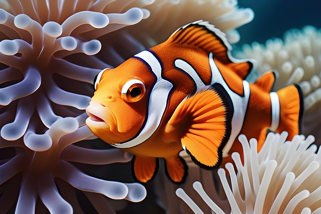

Ри́би (Pisces) — парафілетична група водних хребетних тварин, зазвичай холоднокровних (точніше екзотермних) із вкритим лусками тілом та зябрами, наявними протягом всього життя. Активно рухаються за допомогою плавців (часто видозмінених) або руху всього тіла. Риби поширені як у морських, так і в прісноводних середовищах, від глибоких океанічних западин до гірських струмків. Риби мають велике значення для всіх водних екосистем як складова частина харчових ланцюгів та велике економічне значення для людини через споживання їх у їжу. Люди як виловлюють диких риб, так і розводять їх у створених з цією метою господарствах.
На ранніх етапах створення біологічної систематики риб класифікували до одного таксона, проте через поліфілетичність групи, «риб» більше не розглядають як таксономічну групу. Через великий спектр часом взаємовиключних анатомічних та фізіологічних особливостей організмів — представників цієї групи, її визначення є досить нечітким.